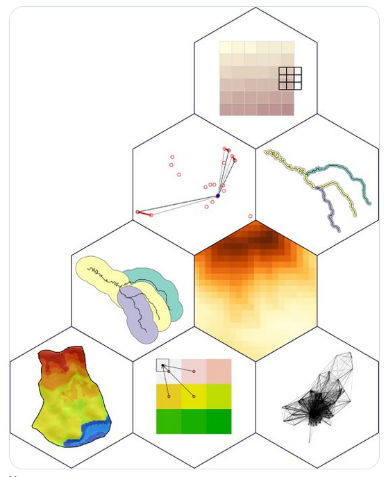
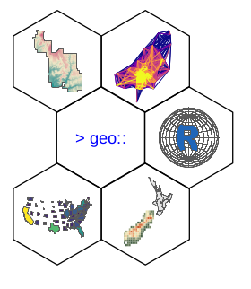
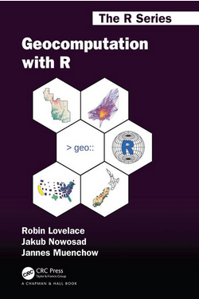

Geocomputation with R comptetition: book cover for the 2nd edition
Introduction
The 2nd edition of Geocomputation with R is due to be published in 2024. Now, we’re looking for a new cover image and we’d like your help. The competition is open to all and we have some prizes (see below).
We’re launching this map competition on 1st December, the day after the #30DayMapChallenge finished, to keep the map-making momentum going (and to provide an outlet for anyone suffering from withdrawal symptoms)! Like the 30 Day Map Challenge this competition is set up in the spirit of sharing ideas and fun. Unlike the challenge you have up to 31 days to create a single map, set of maps or other visualisation that could go on the front cover of this popular [open source] and community-driven book (questions are welcome via GitHub issues/discussions and on the geocompx Discord server).
A bit of history
Marco Sciaini won the competition for the book cover of the first edition of Geocomputation with R. His winning entry is shown on the left below. After some iteration on this winning idea, the concept was refined, resulting in a reproducible image (see its source code at github.com/geocompx/geocompr/) (center). Then, the image was incorporated into the official cover of the book’s first edition (right).



Competition
The competition has the following rules:
- The image must be (somewhat) related to Geocomputation with R
- The winning image/concept must be based on reproducible code
- The deadline for submissions is 31st December 2023
Submissions will be evaluated by us, the authors of Geocomputation with R, based on:
- How good we think the image will look as a front cover for the second edition of Geocomputation with R
- Creativity and originality
- Quality of the code
How to enter
To enter, please submit your idea via GitHub (by sharing your idea as a comment in issue #980), by email or find us on social media: Robin, Jakub.
Prizes
The winner will receive a $150 voucher for Taylor and Francis books, a copy of the second edition of Geocomputation with R and will be credited in the book. A runner-up will receive a copy of the book.
We look forward to seeing your ideas!
Reuse
Citation
@online{lovelace,_jakub_nowosad,_jannes_muenchow2023,
author = {Lovelace, Jakub Nowosad, Jannes Muenchow, Robin},
title = {Geocomputation with {R} Comptetition: Book Cover for the 2nd
Edition},
date = {2023-12-01},
url = {https://geocompx.org/post/2023/map-cover-competition/},
langid = {en}
}